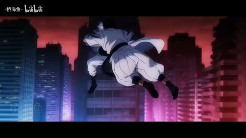

观察共同关系，而非比较谁更炫
对照阅读
同一手法可以传达不同情绪；不同手法也能解决同一表达问题。先看共同任务，再看素材、代价与取舍。
自选两个案例
- 两例的主焦点分别在哪里？用面积、明暗、位置或运动给出证据。
- 连接发生在整屏、版式还是局部图层？有没有把源片动作当后期？
- 如果换掉人物IP与题材，什么关系还能保留？
- 加的每一层带来什么收益，牺牲什么阅读或空间清晰度？
稳定构图也能有信息
头像依次加入与游戏界面切换：比较局部增加、主版式替换和真实镜头切换。
 H01
H01界面、程序与秩序
同构图内头像依次加入，就是关系信息的增加；它不需要被夸写成七次切镜。学习信息渐进和中心人物的稳定。
主要样本5个分析单元
 H19
H19界面、程序与秩序
游戏菜单、选项和相册将动画重新组织成关系叙事。高速窗能证明短裁切执行，但较慢能量段和后记承担不同任务。
主要样本8个分析单元
迁移练习：把七个人物关系改成三个产品功能，保持信息逐项清楚。
轻盈与疏离，用同一类图形
几何色块、人物轮廓与留白如何改变语气？不要只按色彩鲜艳程度评价完成度。
 H02
H02拼贴、色块与风格统一
蓝黄粉几何要与人物轮廓、视线和动作一起读。关键是色块面积与前后层次，既学风格，也避免把原片片头全算UP新增。
主要样本5个分析单元
 H43
H43拼贴、色块与风格统一
浅色、细线与大留白仍可清楚；别把缩略图上的淡误判为原画失真。放大看字芯和轮廓，再评价风格。
主要样本8个分析单元
迁移练习：同一人物做活力与疏离两版，只调整比例、留白和颜色面积。
快动作与大变化是两回事
前者选窗可辨多次连接，后者城市旋转和斩击可能同镜持续。

AI41方向、冲击与节奏
高密度动作窗仍需回答“谁对谁做了什么”。查看视点、动作方向与接触结果，不把生成素材已有连接全算后期新增。
主要样本7个分析单元
 AI42
AI42方向、冲击与节奏
城市翻转和白色斩击可在同镜内产生巨大变化。把空间运动、特效覆盖与真正换镜分开，是判断节奏的基础。
主要样本8个分析单元
迁移练习：给动作片段分三栏标注：镜头连接、镜内动作、特效事件。
文字强度与信息负担
纯字画面与HUD密字各自要求读什么？暗部细字什么时候失去功能？
 H23
H23字重、留白与情绪
纯文字也能产生强度：词义、字号、密度和停留共同工作。检验文字是否真能被读懂，而不只觉得画面在变。
主要样本7个分析单元
 AI06
AI06界面、程序与秩序
这是重要的改错案例：中央关键词明确，边缘细字过暗。学习统一系统语言，也要识别暗色美术牺牲了哪些信息。
机制／局限参考7个分析单元
迁移练习：做正文、关键词、字纹三层，明确哪一层必须读懂。
少特效与多层合成都能表达
共同动作的选材连接，与照片/漫画记忆材质，是两种表达组织。
 H25
H25意象、色彩与纪实
连接的力量来自相遇、凝视和接吻等共同意象。摄影原本已经优秀，剪辑者的表达在于选择、顺序和停留。
主要样本6个分析单元
 H40
H40漫画、纸张与记忆
胶带照片、手部细节与漫画条带将关系转化为可触摸的记忆；避免每一种情绪都用同一纸张模板。
主要样本8个分析单元
迁移练习：同一关系先用六镜硬切讲清，再只加一种有理由的材质。
改色与创造动作的工作量
蓝火改色与生成战斗需要不同输入；光效不能替代人物动作。
 H24
H24方向、冲击与节奏
蓝火是可研究的选择改色；骷髅、火焰几何和链条动作主要来自影视素材。分清“改色”与“创造动作”，才能正确估计制作量。
主要样本6个分析单元
 AI49
AI49方向、冲击与节奏
片尾给出了参考图与分时段动作输入。可把它当分镜约束教材：先明确机位和动作任务，再讨论生成工具。
主要样本6个分析单元
迁移练习：列出人物、动作、遮罩、光效四层，逐层写明素材从哪里来。
同一版式可以持续变化
条带内部更新与界面模块更新：用信息顺序理解视觉节奏，而不只数刀。
 H33
H33漫画、纸张与记忆
条带、折页和逐格更新让同一主版式持续有信息；这类视觉密度不能只用硬切率解释。原作者为ALINCO。
主要样本9个分析单元
 AI01
AI01界面、程序与秩序
把“程序执行”读成关系变化：主面板、大标题和角色之间如何交换注意力？红黑高潮与冷色界面怎样形成情绪分段？
主要样本5个分析单元
迁移练习：设计四次局部更新，最后才换整屏布局，测试记忆负担。
宏大景观与亲密空间
小人物/巨构与漫画三层空间，都靠尺度、遮挡与停留建立感受。
 AI28
AI28巨构、环境与留停
慢并不等于没有节奏。小人物、建筑框景与云雾让观众逐层读尺度；比较不同停留会如何改变敬畏感。
主要样本5个分析单元
 H41
H41漫画、纸张与记忆
漫画人物、照片质感背景和落叶之间的遮挡形成空间。共享活动片头与正文的个人合成劳动要分别观察。
主要样本7个分析单元
迁移练习：把同一三层场景分别做敬畏、亲密两版，说明相机距离的作用。
反转依赖设定与回收
宠物武侠的材质反差与误解向反应选材：形式不同，都需前后关系。
 AI48
AI48细节、反应与转折
武侠幻想与真实宠物的反差，依赖落点和回收。水墨、打斗和日常拖鞋的材质变化，应服务反转而不是各自炫技。
主要样本7个分析单元
 H20
H20细节、反应与转折
低特效密度也能有表达：反应镜头、道具和前后关系是核心。若只追求复杂转场，会错过语义重组的价值。
主要样本5个分析单元
迁移练习：写一个反转，先只画三张分镜，不借音乐或解释字幕兜底。
辨认复用与自己的增量
相同品牌动画与摄影出现两次，不代表两次独立制作；观察新语境与顺序。
 H49
H49意象、色彩与纪实
品牌片头和优秀摄影来自原团队；粉丝混剪的增量在取舍与组织。与H50并读能练习识别同源素材。
机制／局限参考6个分析单元
 H50
H50意象、色彩与纪实
新旧口播、器材和旅行素材形成发展回顾。重复品牌片头不等于独立新特效；把注意力放到时间线与人物成长。
主要样本7个分析单元
迁移练习：取同一组三个素材做两种主题，逐项列借用和新增。